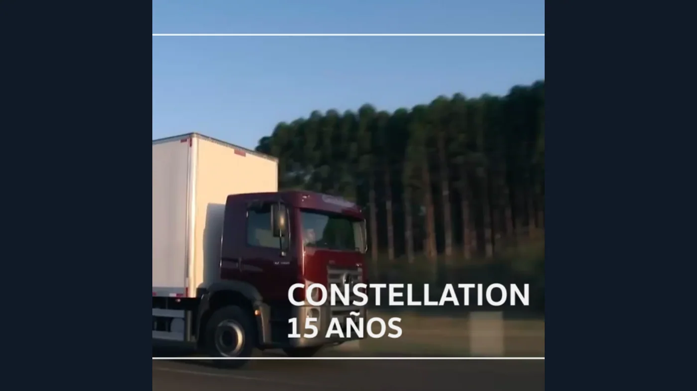
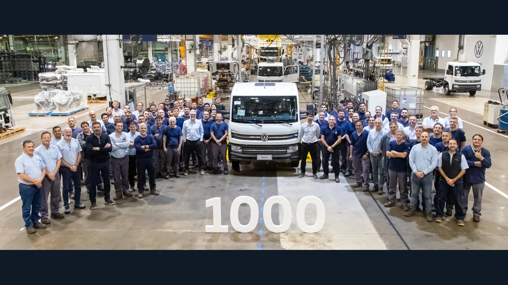

El Volkswagen Constellation no es un único camión que permaneció igual durante veinte años. Es una familia que fue sumando motores, capacidades, transmisiones y aplicaciones, hasta combinar una historia regional con un capítulo industrial argentino. Esa evolución explica por qué el nombre aparece tanto en conversaciones sobre distribución como sobre transporte de larga distancia o trabajo pesado.
Para contar su recorrido hay que separar tres momentos: la presentación del proyecto, el comienzo de las ventas y la llegada a cada mercado. También es necesario distinguir una novedad brasileña de una versión argentina. Una cabina reconocible puede ocultar diferencias importantes entre años y configuraciones.
2005: un proyecto nuevo para Volkswagen Camiones
El archivo de Volkswagen sitúa la presentación a la prensa el 19 de septiembre de 2005, en Brasil. La marca describe el desarrollo como un trabajo conjunto de ingeniería brasileña y equipos alemanes. No se trataba solamente de renovar un nombre: Constellation buscaba ampliar la propuesta de producto y dar una identidad propia a una nueva etapa.
En su retrospectiva sobre la familia, VWCO recuerda una inversión de alrededor de mil millones de reales, más de 200 profesionales involucrados y más de siete millones de kilómetros de ensayos en Sudamérica, África y Europa. Son cifras históricas comunicadas por el fabricante, no valores de inversión actualizados.
La primera propuesta reunió los 19.320 Titan Tractor, 17.250 y 24.250. La cabina incorporó alternativas con dormitorio y techo alto de fábrica, una novedad destacada por Volkswagen en su reconstrucción del proyecto. Así, la presentación vinculó la mecánica con el espacio de trabajo del conductor.
Por qué aparecen 2005 y 2006 en su historia
La cronología de los veinte años distingue el inicio de ventas en 2006 de aquella presentación de 2005. Por eso las dos fechas aparecen en publicaciones oficiales. No es necesario elegir una y borrar la otra: describen hitos diferentes.
Esta distinción ayuda a interpretar aniversarios, avisos de usados y recuerdos de propietarios. El año de una presentación no tiene por qué coincidir con la primera entrega en un país, y el año de patentamiento tampoco permite reconstruir por sí solo toda la trayectoria comercial de una versión.
2007: el Constellation llega a Argentina
El lanzamiento argentino ocurrió en marzo de 2007, durante Expotransporte. Volkswagen identifica como integrantes iniciales locales al 19.320 E Tractor, al 31.320 E y al 17.250 E. En 2008 se incorporaron los medianos 13.180 E y 15.180, ampliando la oferta junto a la familia Worker.
La marca asocia esta llegada con la gestión electrónica de la inyección y nuevas herramientas de diagnóstico. El cambio no fue solamente visible desde afuera: también modificó las consultas técnicas que debía atender la red de servicio.

De los primeros motores a la etapa MAN
La evolución mecánica fue uno de los grandes capítulos del Constellation. Volkswagen documenta la incorporación de motores MAN adaptados por su ingeniería para aplicaciones regionales. Los D08 de cuatro y seis cilindros, junto con el D26, pasaron a formar parte de su estrategia de producción de motores en Brasil.
En la etapa Euro V, ciertas configuraciones MAN emplearon recirculación de gases de escape, conocida como EGR, sin utilización de ARLA 32 o urea. Esa característica debe atribuirse a las versiones documentadas: no significa que cualquier Constellation, de cualquier año, prescinda de urea. La familia siguió evolucionando y sus sistemas de emisiones no son uniformes.
Para la historia del modelo, lo significativo es la continuidad de una denominación a través de cambios de tecnología. Para el propietario, lo importante es identificar qué motor y qué sistema equipa su unidad. El emblema de la cabina no reemplaza la ficha técnica ni el número de chasis.
El 17.280 y la etapa Advantech argentina
La retrospectiva argentina señala 2015 como año de presentación de la gama Advantech Euro V y de la nueva motorización MAN. El 17.280 adquirió un lugar destacado dentro de esa etapa. Es un hito local que no debe confundirse con el calendario previo de renovación brasileño.
Su importancia también puede entenderse por la permanencia del nombre en distintas etapas comerciales. Años después, el 17.280 sería uno de los modelos elegidos para producir en Argentina. Ese vínculo entre trayectoria de producto y decisión industrial es una de las razones por las que merece un capítulo propio dentro de la familia.
V-Tronic, Robust y una gama más amplia
La línea del tiempo brasileña registra en 2013 los 19.420, 25.420 y 26.420 V-Tronic; en 2015, los 23.230 y 24.330 con opción de transmisión automatizada; y en 2019, los Robust 17.260 y 24.260. Son hitos de ese mercado, no fechas automáticas de lanzamiento argentino.
Esta ampliación permite comprender qué significa hablar de una familia. No todas las tareas requieren el mismo conjunto, y una renovación puede responder a una aplicación particular sin reemplazar toda la gama. Por eso una historia del Constellation no puede reducirse a una sola potencia ni a una única transmisión.
2020: el salto del Constellation 33.460
En el contexto del aniversario de quince años, VWCO presentó el Constellation 33.460 6x4 junto con los nuevos Meteor. El Constellation incorporó el MAN D26 de 13 litros producido en Brasil, con 460 CV y 2.300 Nm, y transmisiones automatizadas Traxon de 12 y 16 velocidades según configuración.
La propuesta se orientó principalmente al trabajo fuera de ruta y también a usos mixtos. El anuncio mostraba que la cabina Constellation podía integrarse en una aplicación de mayor exigencia, mientras Meteor abría otra línea dentro de la oferta de Volkswagen.
No corresponde presentar al Meteor como un simple cambio de nombre del Constellation. El propio lanzamiento los identifica como productos distintos. Compartir tecnologías o pertenecer al mismo fabricante no elimina las diferencias de cabina, configuración y aplicación.
2023 y 2024: otra etapa de actualización
La cronología oficial brasileña ubica la nueva generación Euro 6 en 2023 y el paquete Highline en 2024, con instrumental digital y central multimedia. Estos cambios sumaron equipamiento a una identidad de producto que seguía siendo reconocible.
Conviene leer esa continuidad sin suponer que todos los ejemplares recibieron las mismas mejoras. Un paquete puede corresponder a versiones determinadas, y una especificación de otro país no describe necesariamente un camión argentino del mismo año.
Mayo de 2024: comienza el capítulo cordobés
El 14 de mayo de 2024, Volkswagen Argentina comunicó el inicio de producción en serie de camiones y buses en su Centro Industrial Córdoba. La línea, instalada en un área de 15.000 metros cuadrados, incluyó al Constellation 17.280 en versiones chasis-cabina y tractor, junto con Delivery y Volksbus.
La decisión agregó una dimensión nueva a la relación con el mercado local. Constellation ya no tenía solamente una historia de comercialización argentina: determinadas versiones incorporaban producción nacional. Eso no convierte en argentinos a todos los modelos de la familia ni cambia el origen de las unidades anteriores.

En 2025, la marca comunicó la unidad número 1.000 de camiones y buses de esa operación. La cifra reúne las familias producidas allí, no mil Constellation exclusivamente. El hito documenta la continuidad del proyecto iniciado en mayo de 2024.
Constellation en 2026
El aniversario permite mirar el recorrido como una secuencia de decisiones, no solamente como una suma de modelos. En Argentina, el capítulo industrial aporta una perspectiva especialmente cercana para transportistas, talleres y proveedores.
Por su parte, una comunicación de Volkswagen Argentina del 3 de septiembre de 2026 vuelve a identificar al Constellation 17.280 rígido y tractor entre los productos fabricados en Córdoba. Esa referencia permite cerrar el recorrido con una confirmación local reciente, sin trasladar al país toda la oferta brasileña.
Cronología resumida
- 2005: presentación mundial del proyecto.
- 2006: comienzo de ventas.
- 2007: lanzamiento en Argentina.
- 2015: gama Advantech en el mercado argentino.
- 2020: incorporación del 33.460 en Brasil.
- 2023: generación Euro 6 brasileña.
- 2024: inicio de producción del 17.280 en Córdoba.
- 2026: veinte años desde el comienzo comercial de la familia.
El legado: continuidad sin quedarse quieto
Mirada de Zabala Repuestos. La historia del Constellation muestra cómo una familia puede conservar su identidad y, al mismo tiempo, cambiar profundamente. El nombre une vehículos de distintas capacidades y generaciones, pero no borra sus diferencias. Entenderlas permite valorar mejor cada etapa y hablar con mayor precisión de cada unidad.
Para quien trabaja con uno, conservar identificación, configuración e historial de mantenimiento tiene valor práctico y documental. También ayuda a evitar errores al consultar por repuestos: año, chasis, motor y transmisión aportan más información que la palabra Constellation por sí sola.
Desde el proyecto regional hasta la producción cordobesa, su recorrido combina diseño, ingeniería y decisiones industriales. Esa suma, más que una especificación aislada, explica por qué el Constellation ocupa un lugar propio en la historia del transporte argentino.